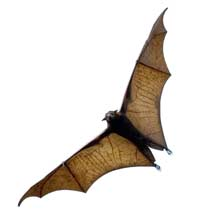

Mosquitoes: a telltale sign that summer's in full swing. Itseems you can't venture outside for more than five minutes withoutbringing a few itchy red bumps back in with you. More than a mereannoyance, mosquitoes also can pose serious health risks that reachfar beyond the occasional skin irritation.
WestNile Virus is an illness transmitted by mosquitoes that cancause encephalitis (swelling of the brain), a condition that maylead to permanent disability or even death. In 2006 alone, theCentersfor Disease Control and Prevention reported 4,269 cases of WestNile in the United States, and 177 fatalities. Humans aren't theonly ones at risk: Dogs, cats, horses and wild game also cancontract the virus.
We don't want to scare you into becoming a hermit. Most casesresult in little more than a fever with nausea or a headache, andthere are effective ways to avoid getting sick at all. The bestmethod is to reduce mosquito populations in your area. You'reprobably aware that you should eliminate pools of standing,stagnate water where mosquitoes lay eggs, but you'd have tocontinuously monitor a 10-mile radius or larger to completelyeradicate the insects from your surroundings.
What next? Don't spend lots of money on one of those gadgets orgizmos that promise to keep them at bay while you relax in ahammock with a glass of lemonade. Instead, consider employing batsfor a natural and effective mosquito abatement program.
Mosquitoes are the primary source of food for many bat species.Some can eat up to 1,000 of those nasty little bugs an hour! Thereare many myths and urban legends about bats, but there's nothing tofear?they won't harm you. In fact, bats are fascinating animals(read more about their complexity inFantastic Bats).
All you have to do to attract them is provide somebat-friendlyshelter ? and building a bat house is a fun and easy project.Simply gather the basic supplies (non-pressure-treated plywood,caulk, paintbrushes, a drill and wood screws, a table or hand sawand water-based stain, paint and primer) and get started; clickhere fordetailed instructions. You can have one up and running in no time:The project is perfect for a lazy Saturday, and usually costs lessthan $30, depending on the size of the house. Consult BatConservation International'sCriteriafor Successful Bat Houses for additional building tips. Nothandy with a table saw? Completed bat houses that are ready toinstall are available for purchase, such asthis onefrom Gaiam Real Goods.
Of course, even with your new bats, you'll need to take theusual precautions against mosquitoes when spending time outside.Cover as much skin as possible, and spray mosquito repellent onexposed skin and clothing ('skeeters can bite through the fabric).Avoid repellents that contain DEET, which is a pesticide that isabsorbed through the skin and can be especially harmful to smallchildren. There are plenty of natural, effective alternatives, suchas lemon balm (readGrow Your Own Mosquito Repellent for more on the topic).Also, try to limit outdoor activity during the hours between duskand dawn, when mosquitoes are most active.
Great Bat Links: These sites are greatresources for frequently asked questions about bats and bathouses:
Bat Conservation andManagement
Organization for BatConservation
Have you had success in establishing a thriving bat colony? Tellus how you did it by posting a comment below.
|
 |
|
|